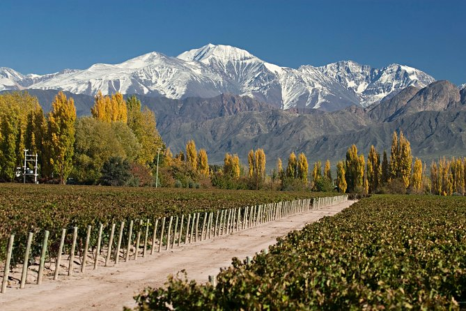
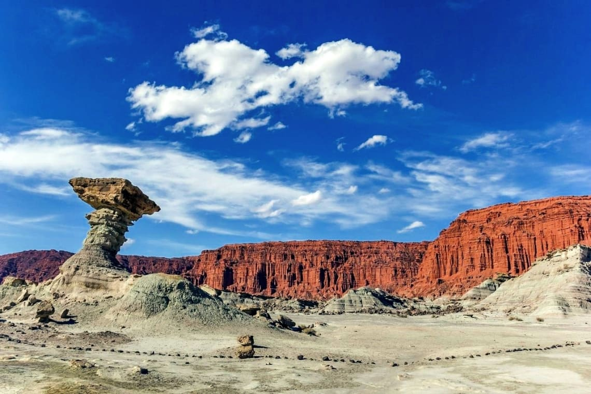
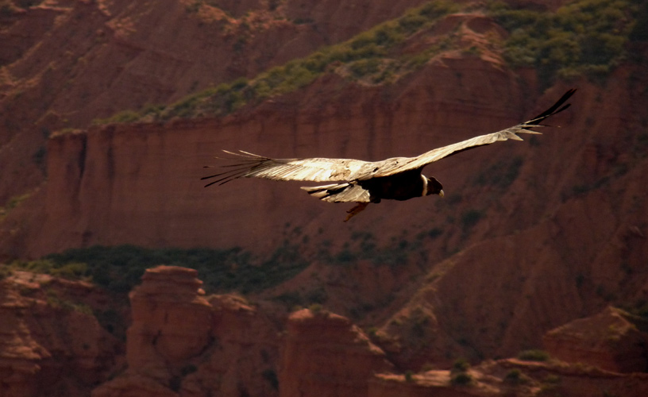

Mendoza
Mendoza es la capital de la provincia de Mendoza y la ciudad más importante del Cuyo. Es un destino popular para los amantes del vino, ya que cuenta con una gran cantidad de bodegas que ofrecen visitas y degustaciones. Mendoza también es un buen lugar para practicar senderismo, ciclismo y otros deportes al aire libre.
Valle de la Luna
El Valle de la Luna es un parque nacional ubicado en la provincia de San Juan. El parque es famoso por sus formaciones geológicas únicas, que incluyen rocas de colores, cañones y cuevas. El Valle de la Luna es un destino popular para los amantes de la naturaleza y la fotografía.
Cañón del Atuel
El Cañón del Atuel es un cañón ubicado en la provincia de Mendoza. El cañón es conocido por sus paredes de roca de colores, que se elevan hasta 600 metros de altura. El Cañón del Atuel es un destino popular para los amantes del senderismo, el rafting y otros deportes al aire libre.

Sierra de las Quijadas
La Sierra de las Quijadas es un parque nacional ubicado en la provincia de San Luis. El parque es famoso por sus fósiles de dinosaurios, que se encuentran en las rocas del parque. La Sierra de las Quijadas es un destino popular para los amantes de la paleontología y la naturaleza.
